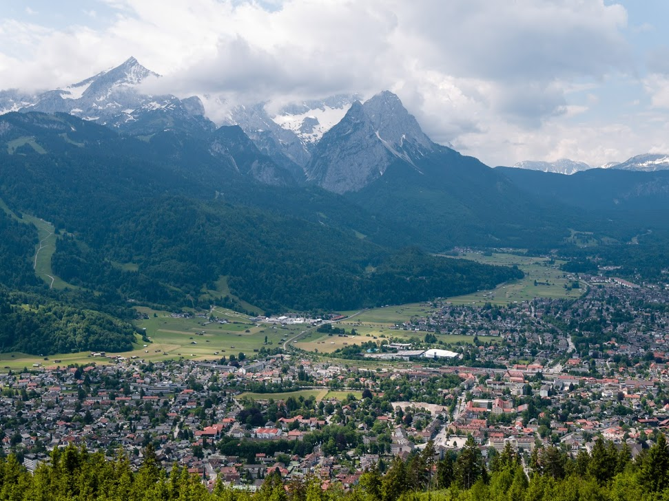
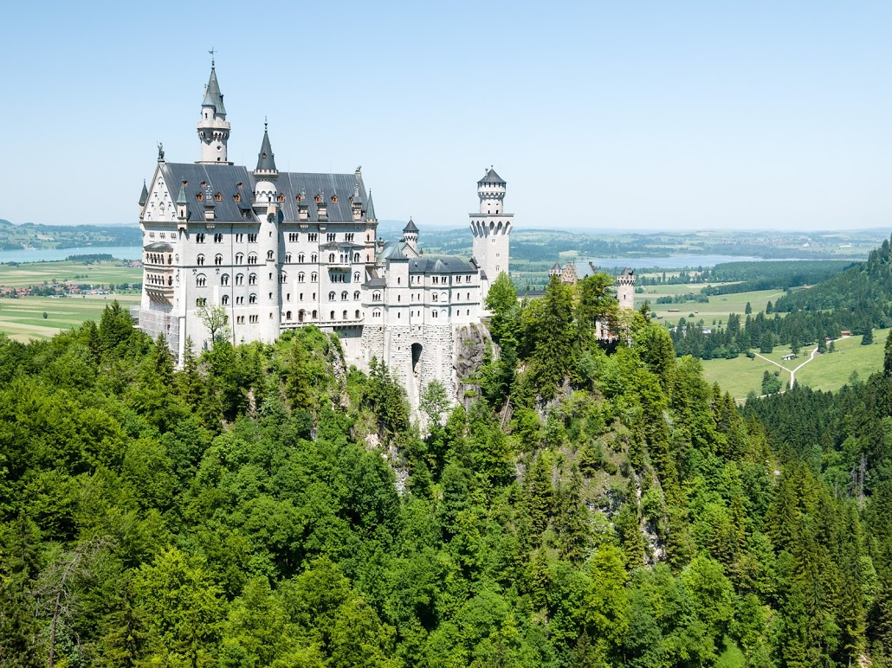

|
|
Concediu in Bavaria
Bavaria este fara indoiala cea mai frumoasa zona a Germaniei si din acest motiv este si cea mai vizitata zona
turistica a tarii. Zona este plina de atractii la tot pasul, de la metropole frumoase cum este orasul Munich,
la castele impresionante, lacuri cristaline cu apa de munte, munti impunatori, paduri verzi, aer curat,
peisaje care iti taie rasuflarea.
|
Munchen

Munchen este capitala regiunii Bavaria si relativ aproape situat de maiestosii munti Alpi. Este un oras primitor,
cu viata intensa, plin de atractii de la muzee faimoase, biserici, teatre, arhitectura la aleile cu magazine
care iti fura ochii.
Top atractii de vizitat in Munchen
|
Alpii Bavarezi

Un loc deosebit care merita vizitat macar o data in viata. Un loc care iti taie rasuflarea.
Din localitatea Garmisch-Partenkirchen se pot efectua drumetii cel mai inalt varf Zugspitze. Peisaje foarte frumoase
se regasesc si de la varfurile Alpspitze si Wank.
Top atractii in Garmisch Partenkirchen
|
Castelul Neuschwanstein

Castelul Neuschwanstein, binecunoscut si din animatiile Disney, castelul din poveste, a fost construit
la cerinta regelui Ludwig al II-lea. Castelul a constituit refugiul personal al regelui. Dupa moartea sa, castelul
a fost deschis publicului, milioane de vizitatori pasindu-i pragul in fiecare an.
Castelul Neuschwanstein
|
|